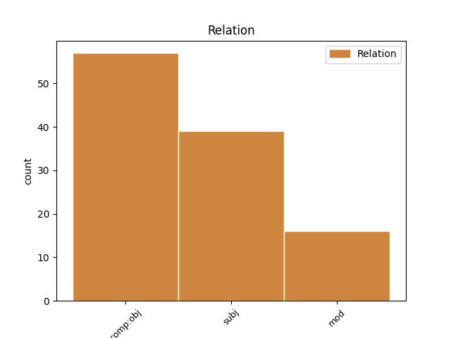
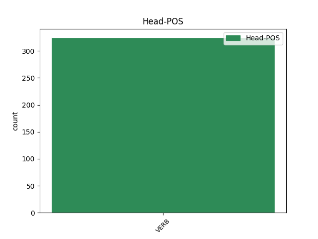
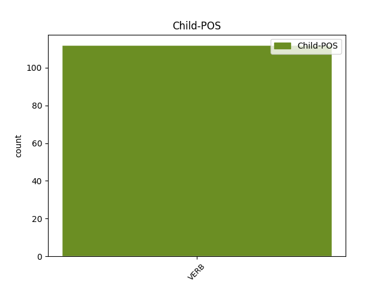

Distribution of features within this leaf



Agreement Rules sorted by frequency.
- When the dependent token is the direct object complements(comp:obj) of the head token,
1 postremo _ _ _ _ 0 _ _ _
2 , _ _ _ _ 0 _ _ _
3 quod _ _ _ _ 0 _ _ _
4 ubique _ _ _ _ 0 _ _ _
5 apud _ _ _ _ 0 _ _ _
6 socios _ _ _ _ 0 _ _ _
7 aut _ _ _ _ 0 _ _ _
8 hostis _ _ _ _ 0 _ _ _
9 idoneum _ _ _ _ 0 _ _ _
10 videbatur video VERB v3siip--- Aspect=Imp|Mood=Ind|Number=Sing|Person=3|Tense=Past|VerbForm=Fin|Voice=Pass 16 comp:obj _ LId=video1|SpaceAfter=No
11 , _ _ _ _ 0 _ _ _
12 cum _ _ _ _ 0 _ _ _
13 summo _ _ _ _ 0 _ _ _
14 studio _ _ _ _ 0 _ _ _
15 domi _ _ _ _ 0 _ _ _
16 exequebantur exsequor VERB v3piip--- Aspect=Imp|Mood=Ind|Number=Plur|Person=3|Tense=Past|VerbForm=Fin|Voice=Pass 0 _ _ _
17 : _ _ _ _ 0 _ _ _
1 illis _ _ _ _ 0 _ _ _
2 merito _ _ _ _ 0 _ _ _
3 accidet accido VERB v3sfia--- Mood=Ind|Number=Sing|Person=3|Tense=Fut|VerbForm=Fin|Voice=Act 0 _ _ _
4 quicquid _ _ _ _ 0 _ _ _
5 evenerit evenio VERB v3stia--- Aspect=Perf|Mood=Ind|Number=Sing|Person=3|Tense=Fut|VerbForm=Fin|Voice=Act 3 subj _ LId=evenio1|SpaceAfter=No
6 ; _ _ _ _ 0 _ _ _
1 Tu _ _ _ _ 0 _ _ _
2 quoque _ _ _ _ 0 _ _ _
3 magnam _ _ _ _ 0 _ _ _
4 partem _ _ _ _ 0 _ _ _
5 opere _ _ _ _ 0 _ _ _
6 in _ _ _ _ 0 _ _ _
7 tanto _ _ _ _ 0 _ _ _
8 , _ _ _ _ 0 _ _ _
9 sineret sino VERB v3sisa--- Aspect=Imp|Mood=Sub|Number=Sing|Person=3|Tense=Past|VerbForm=Fin|Voice=Act 14 mod _ LId=sino1
10 dolor _ _ _ _ 0 _ _ _
11 , _ _ _ _ 0 _ _ _
12 Icare _ _ _ _ 0 _ _ _
13 , _ _ _ _ 0 _ _ _
14 haberes habeo VERB v2sisa--- Aspect=Imp|Mood=Sub|Number=Sing|Person=2|Tense=Past|VerbForm=Fin|Voice=Act 0 _ _ _
15 . _ _ _ _ 0 _ _ _
Disagree Examples:
1 Et _ _ _ _ 0 _ _ _
2 , _ _ _ _ 0 _ _ _
3 quae _ _ _ _ 0 _ _ _
4 debetur debeo VERB v3spip--- Mood=Ind|Number=Sing|Person=3|Tense=Pres|VerbForm=Fin|Voice=Pass 10 comp:obj _ _
5 pars _ _ _ _ 0 _ _ _
6 tuae _ _ _ _ 0 _ _ _
7 modestiae _ _ _ _ 0 _ _ _
8 , _ _ _ _ 0 _ _ _
9 Audacter _ _ _ _ 0 _ _ _
10 tolle tollo VERB v2spma--- Mood=Imp|Number=Sing|Person=2|Tense=Pres|VerbForm=Fin|Voice=Act 0 _ _ _
11 . _ _ _ _ 0 _ _ _
1 Sed _ _ _ _ 0 _ _ _
2 nisi _ _ _ _ 0 _ _ _
3 monstraro monstro VERB v1stia--- Aspect=Perf|Mood=Ind|Number=Sing|Person=1|Tense=Fut|VerbForm=Fin|Voice=Act 0 _ _ _
4 quid _ _ _ _ 0 _ _ _
5 sit sum VERB v3spsa--- Mood=Sub|Number=Sing|Person=3|Tense=Pres|VerbForm=Fin|Voice=Act 3 comp:obj _ LId=sum1
6 faciendum _ _ _ _ 0 _ _ _
7 tibi _ _ _ _ 0 _ _ _
8 , _ _ _ _ 0 _ _ _
9 Gravi _ _ _ _ 0 _ _ _
10 nequiquam _ _ _ _ 0 _ _ _
11 te _ _ _ _ 0 _ _ _
12 lassabit _ _ _ _ 0 _ _ _
13 pondere _ _ _ _ 0 _ _ _
14 . _ _ _ _ 0 _ _ _
1 Phaedri _ _ _ _ 0 _ _ _
2 libellos _ _ _ _ 0 _ _ _
3 legere _ _ _ _ 0 _ _ _
4 si _ _ _ _ 0 _ _ _
5 desideras _ _ _ _ 0 _ _ _
6 , _ _ _ _ 0 _ _ _
7 Vaces vaco VERB v2spsa--- Mood=Sub|Number=Sing|Person=2|Tense=Pres|VerbForm=Fin|Voice=Act 8 subj _ _
8 oportet oportet VERB v3spia--- Mood=Ind|Number=Sing|Person=3|Tense=Pres|VerbForm=Fin|Voice=Act 0 _ _ _
9 , _ _ _ _ 0 _ _ _
10 Eutyche _ _ _ _ 0 _ _ _
11 , _ _ _ _ 0 _ _ _
12 a _ _ _ _ 0 _ _ _
13 negotiis _ _ _ _ 0 _ _ _
14 , _ _ _ _ 0 _ _ _
15 Ut _ _ _ _ 0 _ _ _
16 liber _ _ _ _ 0 _ _ _
17 animus _ _ _ _ 0 _ _ _
18 sentiat _ _ _ _ 0 _ _ _
19 vim _ _ _ _ 0 _ _ _
20 carminis _ _ _ _ 0 _ _ _
21 . _ _ _ _ 0 _ _ _
1 sincerum _ _ _ _ 0 _ _ _
2 mihi _ _ _ _ 0 _ _ _
3 Candore _ _ _ _ 0 _ _ _
4 noto _ _ _ _ 0 _ _ _
5 reddas reddo VERB v2spsa--- Mood=Sub|Number=Sing|Person=2|Tense=Pres|VerbForm=Fin|Voice=Act 7 comp:obj _ _
6 iudicium _ _ _ _ 0 _ _ _
7 peto peto VERB v1spia--- Mood=Ind|Number=Sing|Person=1|Tense=Pres|VerbForm=Fin|Voice=Act 0 _ _ _
8 . _ _ _ _ 0 _ _ _
1 Memini memini VERB v1sria--- Aspect=Perf|Mood=Ind|Number=Sing|Person=1|Tense=Past|VerbForm=Fin|Voice=Act 0 _ _ _
2 qui _ _ _ _ 0 _ _ _
3 me _ _ _ _ 0 _ _ _
4 saxo _ _ _ _ 0 _ _ _
5 petierit peto VERB v3srsa--- Aspect=Perf|Mood=Sub|Number=Sing|Person=3|Tense=Past|VerbForm=Fin|Voice=Act 1 comp:obj _ SpaceAfter=No
6 , _ _ _ _ 0 _ _ _
7 Qui _ _ _ _ 0 _ _ _
8 panem _ _ _ _ 0 _ _ _
9 dederit _ _ _ _ 0 _ _ _
10 ; _ _ _ _ 0 _ _ _